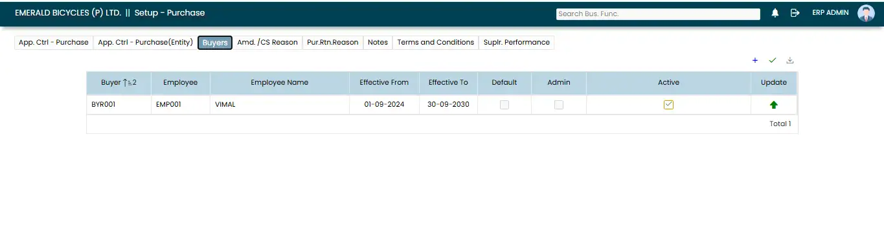
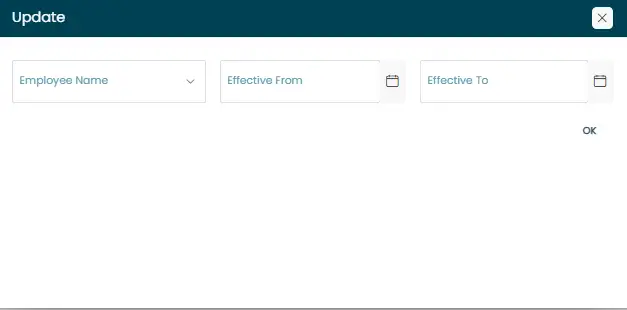

<div data-category="Purchase Order" data-title="Buyer" data-updated="December 01, 2025" data-contributors="RoadmapIT" data-breadcrumb="Home,Purchase Order,Buyer">
  <div class="page-content">
    <p>The Item to be purchased should be purchased by the designated buyer, whose details are configured in the following dialog. This configuration ensures that the correct individual is accountable for purchasing the items. Accurate buyer details help in maintaining proper records, streamlining the procurement process, and ensuring accountability.</p>

    <h5>Navigation path:</h5>
    <p class="fs-6">Supply Chain \ Purchasing \ Setup \ Setup-Purchase \ Buyer</p>

    

    <h2>Update a Buyer</h2>
    

    <ul style="list-style-type: none; align-content: center">
      <li class="mouse-icon">Click <i class="bi bi-arrow-up fs-4 mx-2 text-success"></i> "Update".</li>
      <li class="mouse-icon">Choose the Employee from the LOV.</li>
      <li class="mouse-icon">Enter the Effective From and Effective to date.</li>
      <li class="mouse-icon">Click on "OK" button to save the employee.</li>
    </ul>

    <h2>Default Flag</h2>
    <p>When this flag is enabled the buyer details are set as default and will be shown in certain screen where buyer details should be mentioned.</p>

    <h2>Active Flag</h2>
    <p>This flag should be enabled to activate the buyer.</p>
  </div>
</div>
